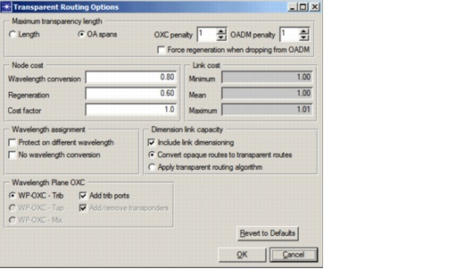

Transparent Networks > Transparent Routing Options Dialog Box
Transparent Routing Options Dialog Box
The Transparent Routing Options dialog box (Figure 10-4 and Table 10-1-Transparent Routing Options Dialog Box ) appears when you click the Transparent Routing Options button in either the Routing or the Dimensioning dialog box. Some options in this dialog box are available in both operations; others are available for routing or dimensioning operations only.
Figure 10-4 Transparent Routing Options Dialog Box

- Convert Opaque Routes to Transparent Routes—Perform link dimensioning based on the algorithm for opaque networks, which does not take the transparency length into account. Afterwards, calculate the required in-node regenerators and wavelength converters for these routes
- Apply Transparent Routing Algorithm—Find optimal transparent routes using the algorithm described in Routing Algorithm
- Length—Route and assign regenerators based on the maximum transparency length of the line system
- OA Spans—Route and assign regenerators based on the maximum number of OA spans of the line system, taking into account the span penalties for intermediate OXCs and OADMs
If OA spans are used to express the MTL, you can specify an additional OXC penalty and an OADM penalty. This specifies the number of additional OA spans counted for each transparent OXC or OADM passed. You can also force regeneration of signals that drop off the OADM.
- Protect on Different Wavelength—If you have 1+1 protection enabled, you can specify the following constraint: for each connection, the working and protection path must enter and leave on a different wavelength, in both end nodes.
- No Wavelength Conversion—Disables possible (implicit or explicit) wavelength conversion along the path in intermediate nodes.
| Home © 1987-2007 OPNET Technologies, Inc. All Rights Reserved. This software may be covered by one or more U.S. Patents. See complete patent notice in the Legal Notices section. OPNET Support Center |